Jediný festival svého druhu v ČR. Přijďte si zažít, jak vypadá cirkulární ekonomika v praxi, inspirovat se, potkat lidi, co tvoří produkty a řešení, které myslí na naši budoucnost, a odejdete s nápady, co změnit u sebe doma nebo ve firmě.
Kdy se vyplatí věci půjčovat místo kupovat, jak nakupovat s rozmyslem a jak vypadá cirkulární město — příklady, které si odnesete rovnou domů.
Praktické dílny — upcyklace, vaření ze zbytků, opravy, DIY. Odejdete s dovedností.
Produkty a projekty firem, které dokazují, že cirkularita funguje — a že má nejrůznější podoby.
Oblečení, co už nenosíte, dostane druhý život. Komunitní swap a bazar.
Dílna na opravy a úpravy věcí je otevřená 14–18 h. Vedu Clothing má navíc vlastní koutek s radami, jak ušít, přešít nebo upcyklovat.
Oblečení z recyklovaných a upcyklovaných materiálů. Udržitelnost, která vypadá dobře.
 Projekt je realizován s finanční podporou hlavního města Prahy
Projekt je realizován s finanční podporou hlavního města Prahy
Vyberte si den a klidně si program filtrujte podle toho, co vás zajímá.
Co se stane s kávovou sedlinou, když ji nevyhodíme? Kokoza žákům v krátké přednášce a navazujícím workshopu ukáže, jak funguje kompostování a jak se z „odpadu" znovu stává živá půda. Na to naváže ReKáva a předvede, jak se z použité kávové sedliny dá vypěstovat vlastní houby — žáci si vyzkouší výrobu houbária na místě a odnesou si domů nejen nové znalosti, ale i večeři :)
Turnusy: 9:00 · 10:45 · 11:30
Kdo: ReKáva + Kokoza
Registrace →Co se vlastně stane s věcí, když skončí v koši? A musí to tak vždycky být? Přednáška INCIEN provede žáky a studenty základními principy cirkulární ekonomiky — srozumitelně, prakticky a na příkladech, které znají ze svého okolí. Ukážeme, jak fungují odpady, recyklace a redesign výrobků v reálném světě, a proč to není jen věc „ekologů", ale i byznysu a měst, ve kterých žijeme.
Kapacita je omezená.
Kdo: INCIEN
Registrace →Co kdyby cirkulární ekonomika nebyla jen velké téma pro firmy, strategie a odpadové hospodářství, ale praktický návod pro každodenní život? Soňa Klepek Jonášová představí principy cirkularity lidsky, srozumitelně a na příkladech, které známe všichni: kdy se vyplatí věci pronajímat místo vlastnit, proč second hand nemusí být kompromis, ale chytrá první volba, jak prodloužit život věcem, které už máme, a kde zbytečně platíme za pohodlí jednorázovosti.
Cena: zdarma · Kapacita: 60
Řečnice: Soňa Klepek Jonášová — zakladatelka INCIEN a jedna z výrazných českých osobností v oblasti cirkulární ekonomiky a udržitelnosti. V INCIEN se zaměřuje na advokacii cirkulární ekonomiky, mimo jiné na projektu Partnerství PRO výstavbu bytových domů z nízkoemisních materiálů. Působí také ve výboru udržitelnosti Škoda Auto a ve správní radě Změna k lepšímu.
Registrovat se zdarma →Praha si dala slib: dostat bioodpad z černých popelnic, rozšířit síť REUSE center, „železné neděle" nebo veřejné zakázky, kdy instituce nekupují jen to nejlevnější. Kolik z toho se zatím skutečně dostalo ze strategie do ulic a kde to zatím drhne? Pavla Antonínová, koordinátorka pro cirkulární ekonomiku HMP, vás provede tím, co v Praze reálně funguje, co se teprve rozjíždí a kde je největší prostor pro posun. Přednášku uzavře diskuze s publikem.
Cena: zdarma · Kapacita: 60
Řečnice: Pavla Antonínová (MHMP) — na Magistrátu hlavního města Prahy se věnuje odpadovému hospodářství a cirkulární ekonomice přes deset let. Stojí za přípravou a koordinací kroků Strategie hl. m. Prahy pro přechod na cirkulární ekonomiku (Cirkulární Praha 2030).
Registrovat se zdarma →Máš doma rozviklanou židli, starý stůl nebo skříňku, která by ještě vydržela, kdyby dostala trochu péče? Přines to s sebou do Cirkulární dílny Kampusu Hybernská. Nářadí i konzultace máš k dispozici celé odpoledne — stačí přijít, kdykoliv se ti to hodí, a nechat si poradit, jak na to.
Volně přístupné a zdarma, ale doporučujeme rezervaci.
Registrace →Diskuze navazuje na přednášku Pavly Antonínové a otevírá ji všem — jak Prahu jako cirkulární město vnímáte vy? Co se vám na tom, co město dělá, líbí, a co vám naopak chybí?
Kdo: Zuzana Drhová (Pražský inovační institut), Pavla Antonínová (MHMP), Broňa Sitár Baboráková (zastupitelka MČ Praha 1, předsedkyně Výboru proti vylidňování centra a pro podporu komunitního života)
Prkénko, věšák, nebo rovnou truhlík na balkonové kytky — vyber si, co chceš vyrobit, a Olda z Cirkulární dílny tě naučí základy práce se dřevem. Nepracujeme s novým materiálem, ale se zbytky a odřezky, které by jinak skončily jako odpad. Žádné předchozí zkušenosti nejsou potřeba, jen chuť něco si postavit vlastníma rukama.
Cena: 300 Kč · Kapacita: 10
Lektor: Olda Navrátil (HYB4 Dílna) — Cirkulární dílna propojuje učení, komunitu, tvoření a cirkulární ekonomiku. Právě tady vznikla během rekonstrukce velká část nábytku, kterým je Kampus Hybernská vybaven.
Registrace →Každý nákup je vlastně hlas. Rozhoduješ, jaké firmy, jaké postupy a jaký svět chceš svými penězi podpořit. Nataša Foltánová ukáže, jak funguje síla spotřebitelské volby v praxi a jak i malá každodenní rozhodnutí dokážou v součtu měnit trh. Žádné moralizování — jen konkrétní návod, jak nakupovat s rozmyslem.
Cena: zdarma · Kapacita: 60
Řečnice: Nataša Foltánová (zakladatelka značky Natasha, Tierra Verde) — ekologické drogerii se věnuje skoro 20 let. V roce 2008 založila firmu Tierra Verde a značku YELLOW & BLUE, dnes pod vlastním jménem vede značku Natasha.
Registrovat se zdarma →Před workshopem: přines si oblečení, které potřebuje opravit nebo upravit, a Vedu mu dá druhý život přímo na místě — bez objednání a bez registrace.
Volně přístupné a zdarma.
Ze starých manžet od košile vykouzlíme klíčenku s kapsičkou — a u toho tě naučím základy šití na stroji. Klíčenka je ideální na drobnosti, které chceš mít pořád po ruce: sáčky pro pejsaře, rtěnku, náplast nebo drobné mince. Nemusíš umět vůbec nic — workshop je stavěný pro úplné začátečníky, provedu tě krok za krokem celým procesem a odejdeš s vlastní, originální klíčenkou. Manžety budou k dispozici na místě.
Cena: 300 Kč · Kapacita: 12
Lektorka: Veronika Dušková (@vedu_clothing) — šití je jejím koníčkem od roku 2019, od roku 2022 ho i studuje. Svoje nadšení, tipy a triky sdílí čtvrtým rokem s tisíci lidmi na sociálních sítích.
Registrace →Třídí doma odpad, i když se nikdo nedívá? Jak vypadá jejich šatník? A jak vidí naší budoucnost? Jitka Nováčková si zve hosty do křesla, aby zjistila, jak moc (a jak upřímně) se jim cirkularita prolíná do každodenního života.
Cena: zdarma · Kapacita: 60
Kdo: Jitka Nováčková (moderátorka), Simona Babčáková, Soňa Klepek Jonášová a další
Registrovat se zdarma →Vzdělávací seriál o cirkulární ekonomice — pouštíme v smyčce po celý den, přijďte se kdykoliv zastavit. Čas upřesníme.
Krátká dokumentární minisérie o cestě odpadu zpátky do oběhu — pouštíme v smyčce po celý den, přijďte se kdykoliv zastavit. Čas upřesníme.
Cirkulární řešení, na která si můžete sáhnout — postavená přímo v proudu festivalu. Uvidíte třeba houbárium na pěstování hub z použité kávové sedliny, sedátko vyrobené z ohraných tenisových míčků nebo Reencle — domácí elektrický kompostér, který zpracuje kuchyňské zbytky do 24 hodin bez zápachu. Lineup vystavovaných řešení průběžně doplňujeme.
Volně přístupné a zdarma.
Oblečení, co už nenosíte, dostane druhý život. Přineste, co doma nepotřebujete, a odneste si něco nového — bez peněz, bez registrace.
Volně přístupné a zdarma.
Je září — ideální čas na nový začátek. Možná se právě stěhuješ, možná ti prostě všechno na balkoně nepřežilo dovolenou. :D Zastav se u stánku Kokozy ve dvoře, přivezou čerstvý kompost a společně si přesadíš nové kytky a seedbomby do truhlíku. Malý restart pro tvůj balkon nebo parapet, se kterým odejdeš rovnou domů.
Kdo: Kokoza
Šikovné ruce se hodí v každém věku. Děti si na dvoře vyzkouší základy práce s nářadím a materiálem pod dohledem lektorů — hravou formou a bez tlaku na výsledek.
Volně přístupné a zdarma. Čas upřesníme.
Slavnostní večer pro zvané hosty, partnery a přátele — reflexe 11 let cirkularity v Česku.
Co se stane s kávovou sedlinou, když ji nevyhodíme? Kokoza žákům v krátké přednášce a navazujícím workshopu ukáže, jak funguje kompostování a jak se z „odpadu" znovu stává živá půda. Na to naváže ReKáva a předvede, jak se z použité kávové sedliny dá vypěstovat vlastní houby — žáci si vyzkouší výrobu houbária na místě a odnesou si domů nejen nové znalosti, ale i večeři :)
Turnusy: 9:00 · 10:45 · 11:30
Kdo: ReKáva + Kokoza
Registrace →Od jednoho příkladu k běžné praxi: jak dostat cirkularitu do veřejných zakázek ve stavebnictví napříč Prahou? Na příkladu rekonstrukce Pragerových kostek — první cirkulární rekonstrukce realizované veřejným zadavatelem v Praze — se ptáme, co brání tomu, aby se z výjimky stalo pravidlo. Řeč bude o materiálovém katastru Prahy, metodice odpovědného zadávání i blížící se povinnosti cirkulárních kritérií ve veřejných zakázkách.
Facilitace: Soňa Klepek Jonášová
Kdo: INCIEN, Pražský inovační institut (PII)
Uzavřená akce, jen na pozvánky.
Co se vlastně stane s věcí, když skončí v koši? A musí to tak vždycky být? Přednáška INCIEN provede žáky a studenty základními principy cirkulární ekonomiky — srozumitelně, prakticky a na příkladech, které znají ze svého okolí. Ukážeme, jak fungují odpady, recyklace a redesign výrobků v reálném světě, a proč to není jen věc „ekologů", ale i byznysu a měst, ve kterých žijeme.
Kapacita je omezená.
Kdo: INCIEN
Registrace →Průměrná čtyřčlenná rodina v Česku ročně vyhodí jídlo za víc než 14 000 Kč. Uživatelé Vinted loni ušetřili 21,6 miliardy eur tím, že nekupovali nové kousky oblečení. A cirkulární ekonomika by v Česku mohla vytvořit až 150 tisíc nových pracovních míst. Michaela Kloudová vybrala deset důvodů, po kterých se možná na svůj nákup, práci i město, ve kterém žiješ, podíváš trochu jinak.
Cena: zdarma · Kapacita: 60
Řečnice: Michaela Kloudová (ředitelka INCIEN) — vede INCIEN od roku 2024 a přináší zkušenosti z byznysu i startupového světa. Založila startup Genster, který dotáhla na roční obrat kolem milionu eur a 35členný tým. Stála také u zrodu prvního cirkulárního obchoďáku No Neke.
Registrovat se zdarma →Cirkulární ekonomika nemusí být jen pro velká města s experty a miliony v rozpočtu. Co třeba předcházení odpadu na akcích a festivalech, re-use centrum, knihovna věcí místo koupě, nebo odpadové hospodářství, které funguje o třídu líp? Cirkulární hub P-PINK (Pardubice) v rámci evropského projektu CHEERS4EU zmapoval, jak si s cirkularitou poradila menší česká města, a přijede ukázat, co z jejich zkušenosti může inspirovat i Prahu.
Cena: zdarma · Kapacita: 60
Řečníci: Cirkulární hub P-PINK (Pardubice) — vzniká pod Pardubickým podnikatelským inkubátorem (P-PINK) jako pilotní projekt evropského programu CHEERS4EU (Interreg Europe). Pomáhá obcím, firmám, organizacím a veřejnosti v Pardubickém kraji najít cestu k cirkulární ekonomice.
Registrovat se zdarma →Fén, co přestal foukat. Toustovač, co už nefunguje. Než to hodíš do koše, zastav se v Cirkulární dílně Kampusu Hybernská a zkus to opravit. Poradíme, v čem je problém, a pokud to půjde, ukážeme ti, jak si spravit věc, na kterou by sis jinak musel koupit novou.
Volný vstup, zdarma. Doporučujeme rezervaci.
Registrace →Až 60 % výrobků na světě, které lidé vyhodí jako nefunkční, by šlo opravit bez náhradních dílů nebo za méně než 150 Kč. Přines si starý spotřebič, co doma jen zabírá místo, a Petr alias Krysák s tebou zjistí, v čem je problém, a pokud to půjde opravit, naučí tě jak — k tomu základy drobných domácích oprav.
Cena: 300 Kč · Kapacita: 10
Lektor: Petr alias Krysák (HYB4 Dílna) — Cirkulární dílna propojuje učení, komunitu, tvoření a cirkulární ekonomiku. Právě tady vznikla během rekonstrukce velká část nábytku, kterým je Kampus Hybernská vybaven.
Registrace →Naučíš se udělat vlastní kimchi z toho, co by jinak skončilo v koši. Kokoza ti ukáže, jak funguje fermentace, proč je to jedna z nejstarších cirkulárních technologií na světě a jak si z ní udělat chytrou domácí rutinu. Na konci si odneseš plnou sklenici domů.
Cena: 200 Kč · Kapacita: 10
Lektoři: Kokoza — od roku 2012 pomáhají lidem z města kompostovat a pěstovat. Věří, že soužití člověka a přírody nejvíc podpoří šířením myšlenky uzavřeného cyklu jídla mezi širokou i odbornou veřejností.
Registrace →Kdo: Tady Tali, Eliška Soukupová
Vzdělávací seriál o cirkulární ekonomice — pouštíme v smyčce po celý den, přijďte se kdykoliv zastavit. Čas upřesníme.
Krátká dokumentární minisérie o cestě odpadu zpátky do oběhu — pouštíme v smyčce po celý den, přijďte se kdykoliv zastavit. Čas upřesníme.
Cirkulární řešení, na která si můžete sáhnout — postavená přímo v proudu festivalu. Uvidíte třeba houbárium na pěstování hub z použité kávové sedliny, sedátko vyrobené z ohraných tenisových míčků nebo Reencle — domácí elektrický kompostér, který zpracuje kuchyňské zbytky do 24 hodin bez zápachu. Lineup vystavovaných řešení průběžně doplňujeme.
Volně přístupné a zdarma.
Oblečení, co už nenosíte, dostane druhý život. Přineste, co doma nepotřebujete, a odneste si něco nového — bez peněz, bez registrace.
Volně přístupné a zdarma.
Je září — ideální čas na nový začátek. Možná se právě stěhuješ, možná ti prostě všechno na balkoně nepřežilo dovolenou. :D Zastav se u stánku Kokozy ve dvoře, přivezou čerstvý kompost a společně si přesadíš nové kytky a seedbomby do truhlíku. Malý restart pro tvůj balkon nebo parapet, se kterým odejdeš rovnou domů.
Kdo: Kokoza
Šikovné ruce se hodí v každém věku. Děti si na dvoře vyzkouší základy práce s nářadím a materiálem pod dohledem lektorů — hravou formou a bez tlaku na výsledek.
Volně přístupné a zdarma. Čas upřesníme.
Program průběžně doplňujeme a upřesňujeme. Sledujte nás.
Mnohem líp se zažije — když si osaháte materiály, vyzkoušíte principy na vlastní kůži a poslechnete si lidi, kteří se tématu věnují každý den. Chceme propojit ty, které spojuje jedno: přesvědčení, že věci můžou fungovat dokola, ne jednosměrně. Protože cirkularita není obor ani teorie z konferencí. Je to způsob, jak přemýšlet o světě a o tom, co po sobě necháme.
Cirkulární ekonomika bývá vnímaná jako něco vědeckého a technicistního — téma do odborných konferencí a strategických dokumentů, které se běžného člověka netýká.
Je v každodenních rozhodnutích. V tom, co uděláme se starým svetrem, se zbytky večeře, z čeho se rozhodneme vyrobit nový produkt nebo od koho objednáme nábytek do kanceláře. Festival Dokola je oslava přesně tohohle - oslava změny myšlení, návratu k selskému rozumu a radosti z inovací.
Postupně odhalujeme jména lidí, kteří cirkularitu nejen znají, ale žijí.
Ambasadorka festivalu · moderátorka talkshow Let's Get Circular
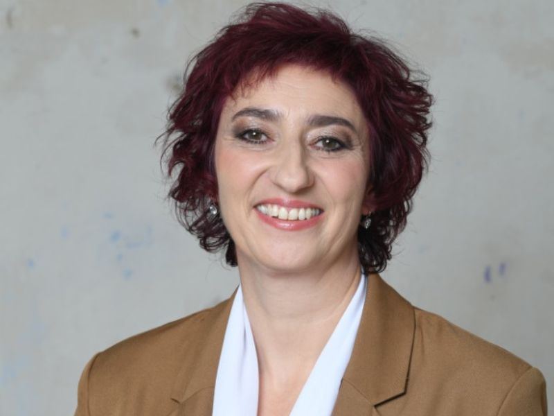
Hostka talkshow Let's Get Circular
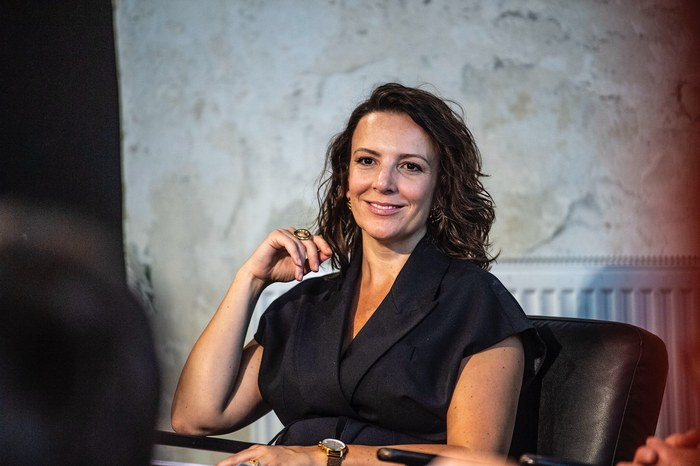
Přednáška: Míň mít, víc být · hostka talkshow Let's Get Circular
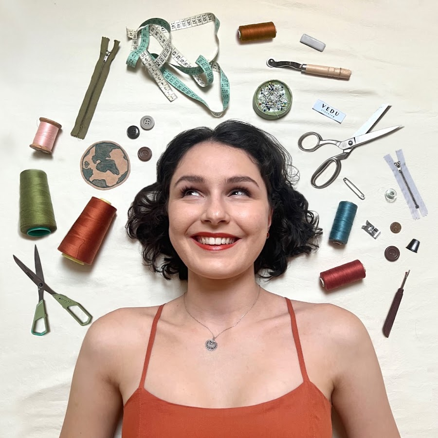
Vedu Clothing · workshop šití & přešívání
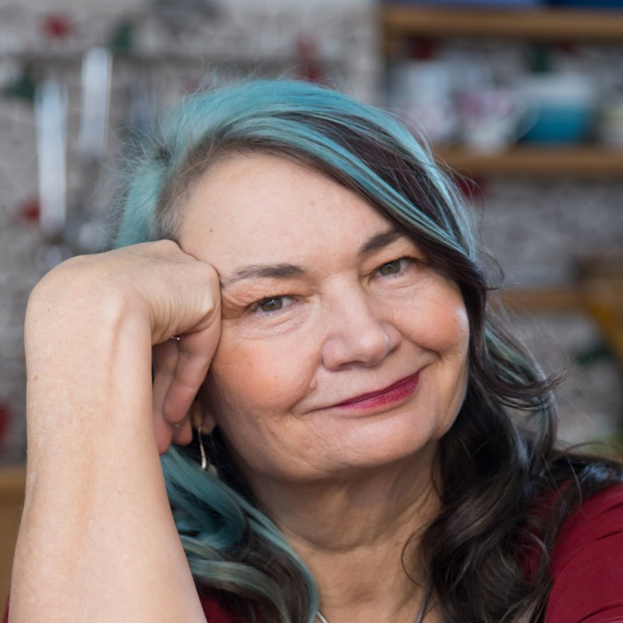
Přednáška: Jak ovlivňuji svět tím, co nakupuji
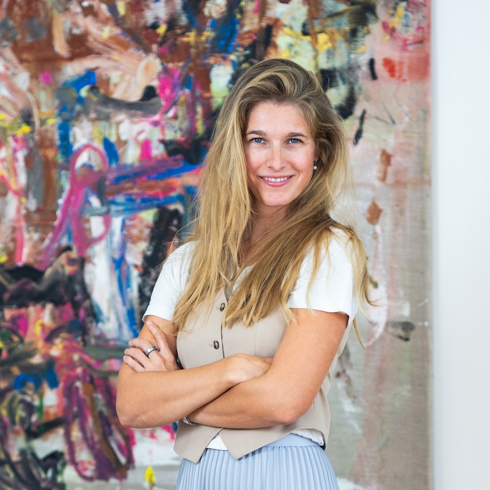
Ředitelka INCIEN · 10 důvodů proč cirkularita dává smysl
On the Boat · styling ze sekáče & přehlídka
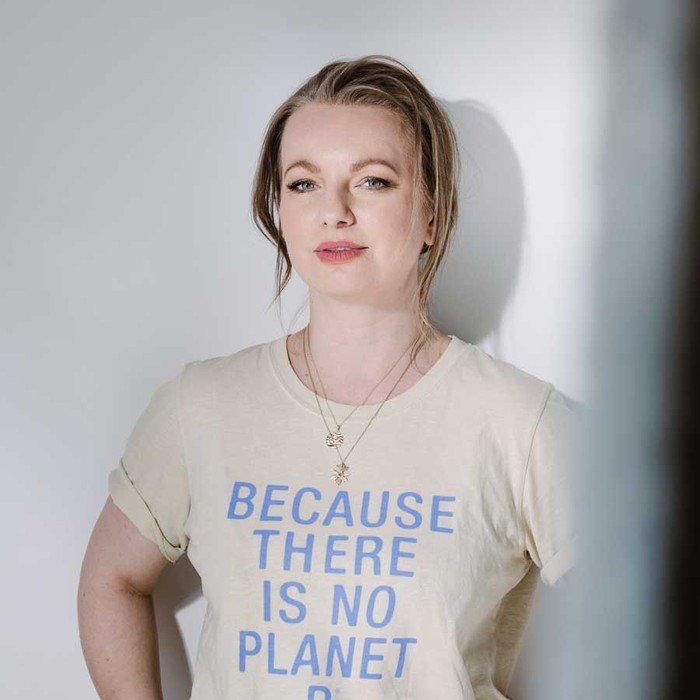
Přehlídka upcyklované módy
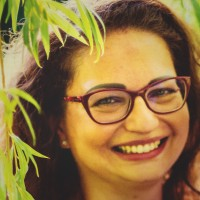
Přednáška: Je Praha cirkulární?
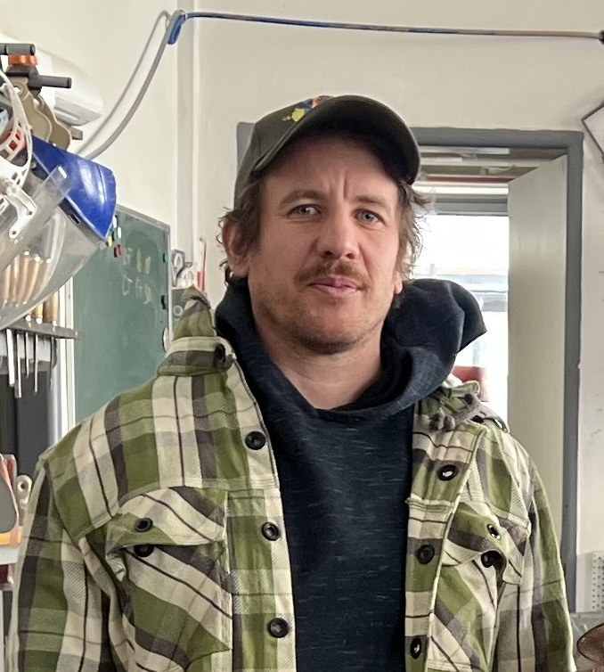
HYB4 Dílna · workshop výroby nábytku
Stand-up: Cirkulární ekonomika
Festival je v jádru zdarma. U aktivit s omezenou kapacitou si zarezervujete místo, ať máme přehled a vy máte jistotu.
Praktické dílny mají omezenou kapacitu. Lístek vám drží místo a pokrývá materiál. Prodej spustíme přes GoOut.
Na přednášky, otevřenou dílnu, talkshow a komentované prohlídky si zdarma zarezervujete místo. Není to povinné, ale pomůže nám to s kapacitou — a vám připomene přijít.
Swap, výstava, přesazování kytek, dílna pro děti, promítání edukativních videí a festivalová atmosféra jsou volně přístupné. Prostě dorazte.
Workshopy i bezplatné rezervace najdete na jednom místě.
Otevřít GoOut →Cirkularita je o spolupráci. Pokud máte produkt, téma nebo nápad, který do festivalu zapadá, máme pro vás místo.
Ukažte své cirkulární řešení přímo v proudu festivalu — na výstavě postavené ze znovu-použitých materiálů.
Detaily pro firmy →Přiveďte třídu na program šitý na míru žákům a studentům. Přednášky, výstava, dílna i materiály do výuky.
Detaily pro školy →Staňte se součástí děje, ne logem v rohu. Od podpory přes zapojení do programu až po vlastní téma na pódiu.
Detaily pro partnery →Festival vzniká díky lidem a organizacím, kteří to s cirkularitou myslí vážně.
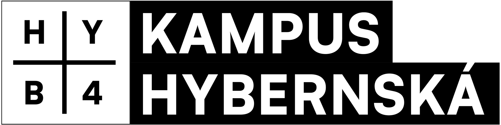
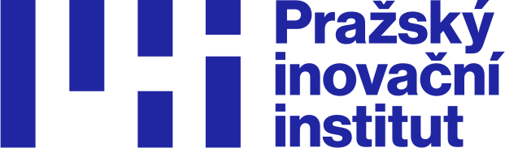
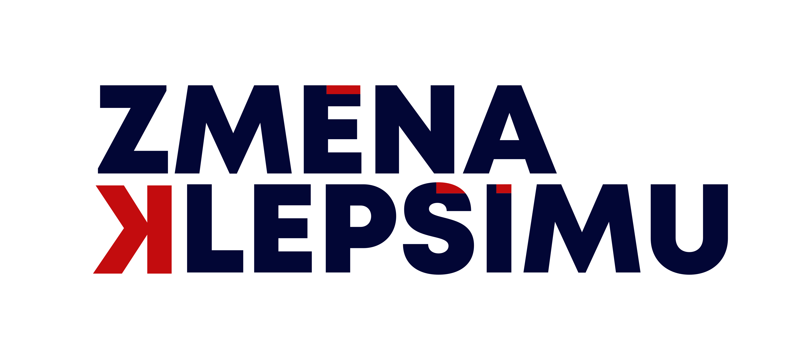
Projekt je realizován s finanční podporou hlavního města Prahy.
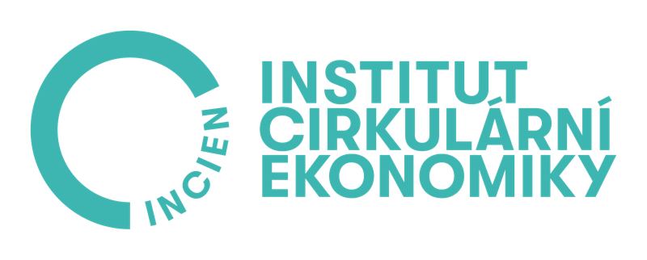
Lídr tématu cirkularity v ČR, který letos slaví 11 let. Od dat a strategických konzultací po vzdělávání a osvětu — INCIEN dostává cirkularitu do médií, měst i firem. Web INCIEN →
Hybernská 998/4, 110 00 Praha — Nové Město
Prostor v centru města, který sám žije principy cirkularity: upcyklovaný nábytek, recyklované materiály, efektivní hospodaření s vodou.
Otevřít v Mapách →Chcete vystavovat, přivést školu, být partnerem nebo máte vlastní nápad? Napište — cirkularita je o spolupráci.